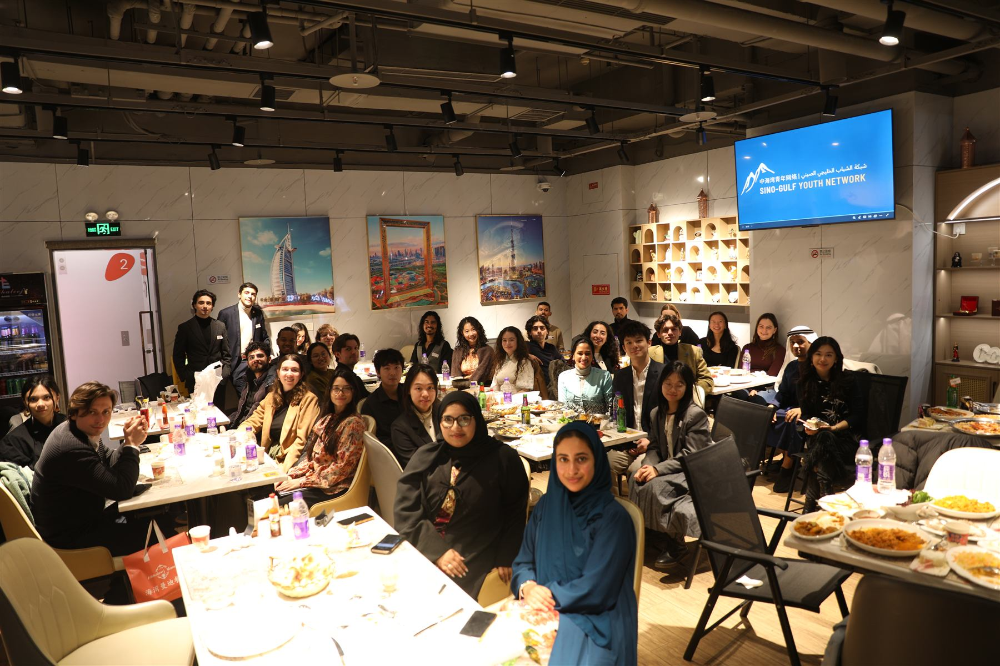
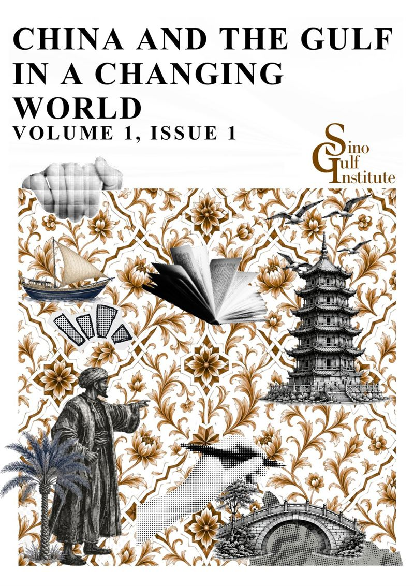
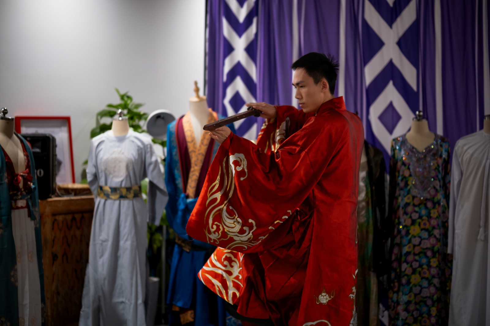
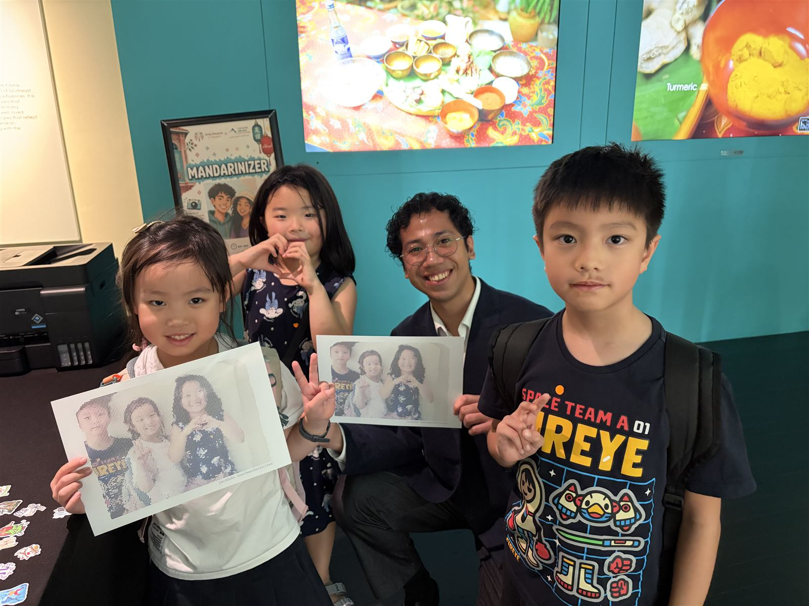
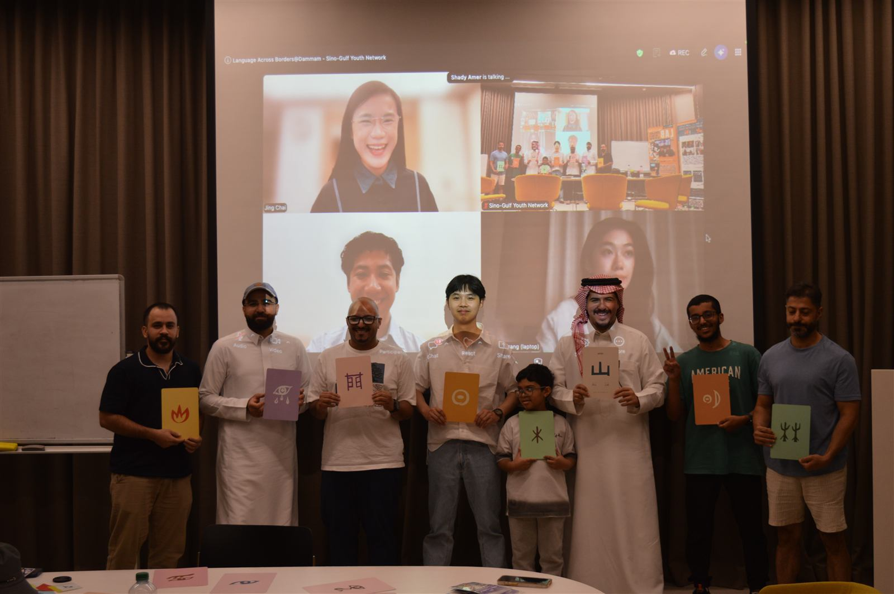
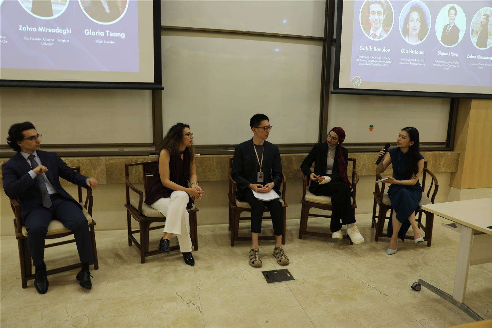

The leading platform connecting emerging leaders across China and the Gulf — through dialogue, cultural exchange, and professional collaboration.
Scroll to explore
SGYN began with a simple observation: as China and the Gulf grow closer, young people on both sides still have too few opportunities to understand and engage with one another beyond headlines and high-level diplomacy. Founded by Gloria Tsang in December 2024, SGYN creates these people-to-people connections through intimate conversations, language exchanges, cultural gatherings, policy dialogues, and career opportunities.
While young people always remain at the heart of our mission and at the helm of operations, SGYN welcomes everyone committed to advancing mutual understanding between China and the Gulf. Our intergenerational network brings together students and young professionals with established academics, practitioners, diplomats, and partner institutions across language and translation, policy, finance, technology, engineering, medicine, and the arts. Within this wider community, SGYN’s youth network includes more than 100 members worldwide. We engage in person across more than eight cities—from Shanghai and Beijing to Jeddah, Abu Dhabi, and New York—with activities conducted in Chinese, Arabic, and English.
Founded and led by Abdulla AlHemeiri
A holistic research centre stretching from weekly news updates, analysis, and policy reports to a dedicated youth publications section, highlighting SGYN's youth perspective. SGI aims to become a leading intellectual platform for China–Gulf dialogue.
Visit the Sino-Gulf Institute →
The first issue, published September 2026 in collaboration with SGYN: 88 pages and ten contributions — seven in English, three in Chinese — on energy, diplomacy, trade, finance, tourism, and technology, written by young researchers across countries, universities, and disciplines.
Read the first issue →
▶Walking through a Shanghai park, Emirati student Mariam Al Mutawa is pulled into a circle of locals dancing and practicing kung fu — strangers become teachers in a spontaneous moment of cultural connection.
By Mariam Al Mutawa — the first voice in the Media Lab. Yours could be next.

LAB reached its eighth city — two days at the Peranakan Museum with Arab Network @ Singapore.

Chinese and Arabic learners at Ithra Library — games, storytelling, and an open mic.

Our inaugural policy and economics forum at Peking University — four speakers across the New Silk Road.
When I founded SGYN in December 2024, my hope was simple: that young people in China and the Gulf would no longer have to learn about each other only through headlines. Watching our members share meals, languages, stages, and ideas across eight cities has been the greatest reward of this work.
This network is built entirely by volunteers — the team you'll meet just below. If you're wondering whether there's a place for you here: there is.
Gloria Tsang
Founder & Executive Director
Students & young professionals — events, community, and friends in 8 cities.
Become a member → 02Mentorship and opportunities for a China–Gulf career.
Apply now → 03Universities, missions, companies, funds, think tanks, media.
Work with SGYN → 04Visibility and community access, from salons to the flagship dialogue.
Support SGYN →SGYN is volunteer-built and free to join. Every cup funds venues, mooncakes, and the next event.